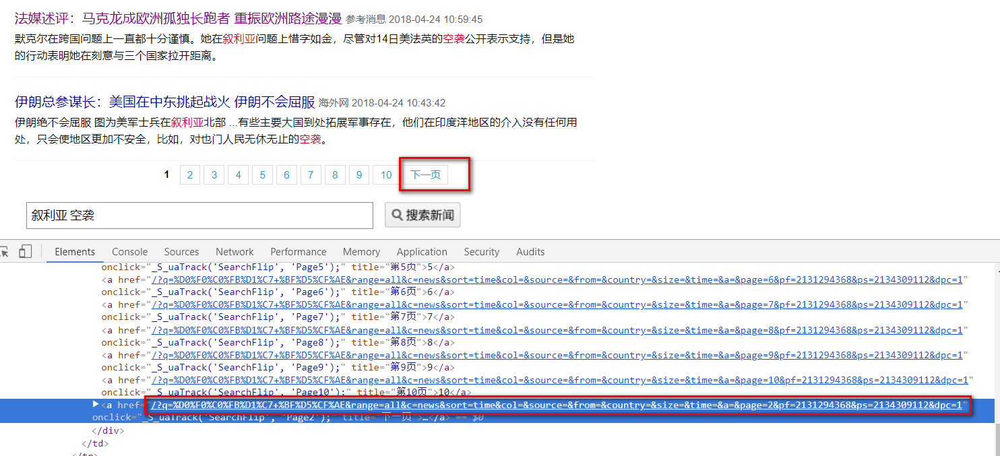

排序算法
排序算法简介
冒泡排序
所有算法程序
#基础数据结果为python中的list
testArr = [6,2,7,3,8,9]
def inverse(array):
lst = array.copy()
length = len(array)
mid = int((length - 1) / 2)
for i in range(mid+1):
temp = lst[i]
lst[i] = lst[length-i-1]
lst[length-i-1] = temp
return lst
#冒泡排序
def bubbleSort(array,desc = False):
lst = array.copy()
length = len(array)
#默认升序,降序只需改变符号
if length == 1:
return lst
else:
for i in range(length-1):
for j in range(i+1,length):
if lst[i] > lst[j]:
temp = lst[i]
lst[i] = lst[j]
lst[j] = temp
return lst
#快速排序
def shortQuickSort(array,left,right):
i = left
j = right
if i >= j:
return array
key = array[i]
while i < j:
while i < j and key <= array[j]:="" j="" -="1" array[i]="array[j]" while="" i="" <="" and="" key="">= array[i]:
i += 1
array[j] = array[i]
array[i] = key
print(array)
shortQuickSort(array,left,i-1)
shortQuickSort(array,j+1,right)
return array
def longQuickSort(array):
def simInsertSort(array):
lst = array.copy()
if len(lst) == 0:
return lst
else:
for i in range(1,len(lst)):
current = lst[i]
k = i
for j in range(i-1,-1,-1):
if current < lst[j]:
lst[j+1] = lst[j]
k = j
lst[k] = current
return lst
def shellSort():
pass
def simSelectSort(array):
lst = array.copy()
if len(lst) == 1:
return lst
else:
for i in range(len(lst)-1):
minVal = lst[i]
k = i
for j in range(i+1,len(lst)):
if lst[j] < minVal:
minVal = lst[j]
k = j
temp = lst[i]
lst[i] = lst[k]
lst[k] = temp
return lst
def heapSort():
pass
def mergerSort():
pass
def radixSort():
pass
def bucketSort():
pass
if __name__ == "__main__":
simSelectSort(testArr)
start = time.time()
b = simInsertSort(a)
time.time() - start
def fab(n):
if n == 1 or n == 2:
return n
else:
return fab(n-1) + fab(n-2)
#任何递归都可以通过循环实现，因此，快速排序也使用循环
def fab2(n):
if n == 1 or n ==2 :
return n
else:
a = 1
b = 2
for i in range(2,n):
temp = b
b = a + b
a = temp
return b
线性回归与梯度下降算法
【摘要】
本文以线性回归为例，讲解了批量梯度下降、随机梯度下降、小批量梯度下降、冲量梯度下降等算法，由浅入深，并结合精心设计的例子，使读者最快掌握这种最常用的优化方法。每一种优化方法，笔者都基于R语言给出了相应的代码，供读者参考，
梯度下降
假如我们有以下身高和体重的数据，我们希望用身高来预测体重。如果你学过统计，那么很自然地就能想到建立一个线性回归模型：
其中$a$是截距，$b$是斜率，$y$是体重，$x$是身高。


我们将身高与体重的关系在Excel里面用折线图表示，并且添加了线性的趋势线。蓝色的线条是真实数据，红色的实线是模型给出的预测值。蓝色线条与红色线条之间的距离绝对值是预测误差。所以，我们要找到最优的$a$和$b$来拟合这条直线，使得我们模型的总误差最小。
我们使用均方误差来表示模型的误差，由于$Ypred = a + bx$，因此，模型的均方误差可以表示为
也就是说，$SSE$是关于$a$和$b$的函数，我们只需要不断调整$a$和$b$，使$SSE$降到最低就可以了。这个时候，我们就可以利用梯度下降算法，来求解$a$和$b$的值。
梯度下降的计算过程如下：
step 1:随机初始化权重$a$和$b$，计算出误差$SSE$
step 2:计算梯度。 $a$和$b$的轻微变化都会导致$SSE$的变化，因此，我们只需要找到能使$SSE$减小的$a$和$b$的变化方向就可以了。这个方向，一般就是由梯度决定的。
step 3:调整权重值，使得$SSE$不断接近最小值。
step 4:使用新的权重去做预测，并且计算出新的$SSE$。
step 5:重复step2-step3，直到权重不再显著变化为止。
我们在Excel中进行上述步骤。为了计算能够快一点，我们首先对数据进行Min-Max标准化。得到如下数据：

step1:随机选取一组权重(此处我们设置a=0,b=1),我们计算出预测值和误差：

step2:计算梯度
$\frac{\partial SSE}{\partial a}$和$\frac{\partial SSE}{\partial b}$就是梯度，他们决定了$a$和$b$的移动方向和距离。
step3: 调整权重值，使得$SSE$不断接近最小值。
调整规则为:
其中，$\eta$是一个被我们称之为学习率(learning rate)的东西，一般设置为0.01或者你希望的任何比较小的数值。
本文选择0.01作为学习率。
step4:使用新的权重去做预测，并且计算出新的$SSE$。

可以看出，SSE从0.155降低到0.111，说明系数有改善。
step 5:重复step2-step3，直到权重不再显著变化为止。
我们知道，一元线性回归的系数可以用公式计算，我们用R的lm()函数来计算权重，结果为
lm(y~x,dat)
Call:
lm(formula = y ~ x, data = dat)
Coefficients:
(Intercept) x
-0.1167 0.9777
然后，我在R里面写了一个梯度下降的函数，当精度调到0.0000001的时候，与lm的结果已经很接近了。
gradientDescent <- 1="" 975="" function(dat,start="c(0,0),learning_rate" =="" 0.01,tol="0.001)" {="" a="start[1]" b="start[2]" x="dat[,1]" y="dat[,2]" iters="0" while(true)="" ypred="a" +="" *="" old_a="a" old_b="b" learning_rate="" sum(y="" -="" ypred)="" sum((y-ypred)="" x)="" if(abs(a-old_a)="" <="tol" &="" abs(b-old_b)="" break;="" }="" list(weights="c(a,b),iters" iters)="" gradientdescent(dat,tol="0.0000001)" $weights="" [1]="" -0.1167315="" 0.9776839="" $iters="" #迭代了975次="" code="">我们常说的梯度，其实是指向量，其方向与切线方向相同。
利用梯度下降法进行权重更新的公式为:
其中，那个倒三角形就是梯度的意思。我们在高中数学学过，切线方向是函数变化速度最快的方向，
Stochastic Gradient Descent
梯度下降算法，又可以称为Batch-Gradient-Gescent,即批量梯度下降算法。从上面的例子可以看出，批量梯度下降算法，每次更新系数都需要所有的样本参与计算，当样本规模达到一定数量以后，这个更新速度会非常慢。另外，还有可能导致内存溢出。
为了克服批量梯度下降的这个缺点，有人提出了随机梯度下降(Stochastic Gradient Descent)算法，即每次更新系数只需要一个样本参与计算，因此既可以减少迭代次数，节省计算时间，又可以防止内存溢出。
对于上述问题，随机梯度下降的算法过程如下：
for every $Y_i$:
$Ypred = a + bx$
$a = a + \eta (Y-Ypred)$
$b = b+\eta(Y-Ypred)\cdot x$
随机梯度下降算法适用于大数量的计算，对于小数据量不一定准确。为了检验随机梯度下降算法，我们构造了一个有10000个样本的数据，同样是计算一元线性回归的系数。
随机梯度下降的函数如下：
stochasticGradientDescent <- 1="" function(dat,start="c(0,0),learning_rate" =="" 0.01,tol="0.000001,iteratons" 100)="" {="" #start:初始参数="" #learning_rate:学习率="" #tol:精度="" #iterations:迭代次数="" dat="as.matrix(dat)" a="start[1]" b="start[2]" x="dat[,1]" y="dat[,2]" iters="0" while(iters="" <="" iteratons)="" #重排，即将样本的顺序打乱="" index="sample(length(x))" old_a="a" old_b="b" for(i="" in="" index)="" ypred="a" +="" *="" x[i]="" learning_rate="" (y[i]="" -="" ypred)="" (y[i]-ypred)="" }="" if(abs(a-old_a)="" &="" abs(b-old_b)="" break;="" (1="" 0.01="" iters)="" #自适应学习率="" if(iters=""> iterations)
break;
}
list(weights = c(a,b),iters = iters)
}
然后我们构造一个相对大的样本用来检验算法：
set.seed(100)
x <- 2="" 10="" seq(1,10,length.out="10000)" y="" <-="" *="" x="" +="" rnorm(10000)="" bigdata="" data.frame(x="" ,y="" )="" plot(x,y)="" cor(x,y)="" <="" code="">
回归结果：
lm(y~x,data = bigdata )
Call:
lm(formula = y ~ x, data = bigdata)
Coefficients:
(Intercept) x
2.004 2.006
随机梯度下降的结果：
stochasticGradientDescent(bigdata,learning_rate = 0.001,tol=0.000000001)
$weights
2.01138749995603 2.00584502615877
$iters
69
批量梯度下降的结果：
batchGradientDescent(bigdata,learning_rate = 0.000001,tol = 0.000000001)
$weights
2.00385275101478 2.00634924457312
$iters
8345
可以看到，在同样的精度要求下，随机梯度下降进行59次迭代以后即收敛，而批量梯度下降则需要迭代8345次。
但是随机梯度下降也有一个缺点，即参数更新频率太快，有可能出现目标函数值在最优质附近的震荡现象，因为高频率的参数更新导致了高方差。 同时也可以看出，在相同精度要求下，随机梯度下降计算出来的系数与精确值离差较大，而批量随机下降则更接近精确值。
Mini-batch Gradient Descent
小批量梯度下降(Mini-batch Gradient Descent)是介于上述两种方法之间的优化方法，即在更新参数时，只使用一部分样本（一般256以下）来更新参数，这样既可以保证训练过程更稳定，又可以利用批量训练方法中的矩阵计算的优势。
具体更新哪些样本，通常是随机确定的，下面，我们定义一下小批量梯度下降的函数，用来求解上述bigdata的系数。
miniBatchGradientDescent <- 1="" function(dat,start="c(0,0),learning_rate" =="" 0.01,tol="0.001,batchSize" 256,iterations="10000)" {="" a="start[1]" b="start[2]" iters="0" len="length(y)" while(true)="" mini_index="sample(len,batchSize,replace" false)="" x="dat[mini_index,1]" y="dat[mini_index,2]" ypred="a" +="" *="" error="y" -="" old_a="a" old_b="b" learning_rate="" sum(error)="" sum((error)="" x)="" start="rbind(start,c(a,b))" if(abs(a-old_a)="" <="tol" &="" abs(b-old_b)="" break="" if(iters="">= iterations)
break
}
list(weights = c(a,b),iters = iters,coes = start)
}
miniBatchGradientDescent(bigdata,learning_rate = 0.0001,tol = 0.00001,batchSize = 100)
$weights
2.02646349019186 2.0439693915315
$iters
920064
小梯度批量梯度下降收敛时需要迭代92万次，这显然有点多了。一般来说，当数据量非常大时，小批量梯度下降比较有效，否则计算结果很有可能出现偏移。
先mark，偏移的原因待考究。
Momentum optimization
考虑这样一种情形，小球从山顶往下滚动，一开始很顺利，可是在接近最低点的时候，小球陷入了一段狭长的浅山谷。由于小球一开始并不是直接沿着山谷的方向滚下，因此小球会在这个浅浅的山谷中不断震荡——不断冲上墙壁，接着又从墙壁上滚下来。这种情况并不是我们想看到的，因为这增加了迭代时间。冲量(Momentnum)的引入，使得我们的目标更新的更快了，冲量的更新方式有以下两种，两种方式之间并无太大差异。
第一种：
$Z^{k+1}=\beta Z_k + \nabla$
$w^{k+1} = w_k - \alpha Z^{k+1}$
其中，$Z$是一个与$w$方向相同的向量，
第二种：
$Z^{k+1}=\beta Z^k + \alpha \nabla$
$w^{k+1} = w^k - Z^{k+1}$

两者的差别仅仅在于$Z^{k+1}$的系数不同。
通常，这里的学习率要比随机梯度下降小一点，因为随机梯度下降的梯度大一点。$\beta$的取值决定了前一次的梯度有多少被纳入了本次的更新。一般来说，稳定前将$\beta$设置为0.5，稳定后可以设置为0.9或更高。
#适用于求解一元或多元线性回归的回归系数，返回结果包括截距
momentumGradientDescent <- 1="" function(dat,beta="0.9,z" =="" 0,start="rep(0,dim(dat)[2]),alpha" 0.001,tol="0.0000001,iterations" 100)="" {="" dataset="cbind(1,dat)" #将第一列加上1="" cols="dim(dataSet)[2]" #列数="" x="as.matrix(dataSet[,1:(cols" -="" 1)])="" #自变量矩阵="" y="as.matrix(dataSet[,cols],ncol" 1)="" #因变量，矩阵="" w="as.matrix(start,ncol" #权重矩阵="" iters="0" while(true)="" old_w="w" old_z="z" ypred="x" %*%="" error="y" grad="-" t(x)="" z="beta" *="" +="" alpha="" if(sum(abs(w-old_w))="" <="" tol)="" break;="" if(is.integer(iterations))="" if(iters="">= iterations)
break;
}
list(weights = as.vector(w),iters = iters)
}
利用冲量梯度下降求bigdata的系数：
momentumGradientDescent(bigdata,alpha=0.00001)
$weights
[1] 2.003851 2.006354
$iters
[1] 248
可以看到，迭代次数明显减少，并且系数与精确值更加接近了。
Nesterov Accelerated Gradient
然而，让一个小球盲目地沿着斜坡滚下山是不理想的。我们需要一个更聪明的球，它知道下一步要往哪里去，因此在斜坡有上升的时候，它能够自主调整方向。
Nesterov Accelerated Gradient 是基于冲量梯度下降算法进行改进的一种算法，也是梯度下降算法的变种。
在上一种算法中，我们使用了冲量$\beta Z^k$来调整我们的参数改变量，将上述第二种更新方法改写一下，得到如下式子：
$Z^{k+1} = \beta Z^k + \alpha \nabla$
$w^{k+1} = w^k - Z^{k+1} = w^k - \beta Z_k - \alpha \nabla $
$w^k - \beta Z_k $给出了下一个参数位置的近似，指明了参数该如何变化。现在，我们可以不用当前的参数，而是用未来的参数的近似位置来更新我们的参数，即
$Z^{k+1} = \beta Z^k + \alpha \nabla _wJ(w - \beta Z^k)$
$w^{k+1} = w^k - Z^{k+1}$
这里，我们仍然设置$\beta$的值在0.9附近。如下图所示，冲量梯度下降先计算当前的梯度（短的蓝色向量），然后根据累积的冲量向前跨越一大步（长的蓝色向量）。NAG首先根据之前的累积梯度向前迈一大步（棕色向量），然后对梯度进行修正（红色向量）。这种利用近似未来参数来更新参数的方法，可以防止梯度更新太快，并且增加了响应能力。

假设我们的权重矩阵（系数矩阵）为$w$，自变量$x$，因变量$Y$，则损失函数为：
则
那么
根据上述思想，编写的NAG代码如下 ：
#适用于求解一元或多元线性回归的回归系数，返回结果包括截距
NAG <- 1="" function(dat,beta="0.9,z" =="" 0,start="rep(0,dim(dat)[2]),alpha" 0.001,tol="0.0000001,iterations" 100)="" {="" dataset="cbind(1,dat)" #将第一列加上1="" cols="dim(dataSet)[2]" #列数="" x="as.matrix(dataSet[,1:(cols" -="" 1)])="" #自变量矩阵="" y="dataSet[,cols]" #因变量，矩阵="" w="start" #权重矩阵="" iters="0" while(true)="" old_w="w" old_z="z" #中间过程用mid1="" mid2代替="" mid1="apply((old_w" beta="" *="" old_z)="" t(x),2,sum)="" mid2="y" grad="-" apply(mid2="" x,2,sum)="" z="beta" +="" alpha="" if(sum(abs(w-old_w))="" <="" tol)="" break;="" if(is.integer(iterations))="" if(iters="">= iterations)
break;
}
list(weights = as.vector(w),iters = iters)
}
用NAG来求bigdata的系数：
NAG(bigdata,alpha=0.000001)
$weights
[1] 2.003849 2.006350
$iters
[1] 598
AdaGrad
尽管我们可以根据损失函数的梯度来加快更新参数，我们也希望能够根据参数的重要性来决定其更新的幅度。
AdaGrad是一种基于梯度算法的优化算法,它只做了一件事:根据参数来自适应调整学习率。对于不常出现的参数进行较大的更新，对于经常出现的参数进行较少的更新，因此，这种方法非常适合处理稀疏数据。
之前，我们对每一个参数更新所使用的学习率都是一样的，而AdaGrad在每一步都使用不同的学习率对不同的参数进行更新。我们先写出AdaGrad的单个参数的更新方法，然后将其向量化。长话短说，假设$g_{t,i}$表示损失函数对于参数$\theta_i$的梯度：
在步骤$t$:
那么，对于步骤$t$，使用随机梯度下将对$\theta_i$进行更新的公式为：
在上述更新过程中，AdaGrad在每一步都对参数$\theta_i$对应的学习率$\eta_i$进行调整，调整的方法基于过去的所有梯度：
$G_{t}\in R^{d\times d}$是一个对角矩阵，第$i$个对角元素是历史上损失函数对$\theta_i$的所有梯度的平方和，$\epsilon$是一个平滑参数，防止分母为0，通常取$10^{-8}$。有趣的是，如果不加开方，算法表现极差。
因为$G_t$包含了过去所有参数梯度的平方和，因此我们可以将其向量化：
AdaGrad的一个最大的好处是不用手动调整学习率的大小，通常设置默认值为0.01，然后顺其自然就好了。
AdaGrad的一个较大的缺点是，分母是不断增大的，当迭代次数不断增加时，分母会逐渐趋于无穷大，学习率进而趋于无穷小，此时，算法将变得不再有效。
我们延用上述符号来写出AdaGrad的函数。
#SGD为基础
AdaGrad <- 1="" function(dat,theta,learning_rate="0.01,start" =="" rep(0,dim(dat)[2]),tol="0.000001,iterations" 1000)="" {="" dataset="cbind(1,dat)" #将自变量进行增广，第一列全为1="" cols="dim(dataSet)[2]" #列数="" rows="dim(dataSet)[1]" #行数="" x="as.matrix(dataSet[,1:(cols" -="" 1)])="" #自变量矩阵="" y="dataSet[,cols]" #因变量，矩阵="" g="0" theta="start" #权重矩阵="" iters="0" while(true)="" old_theta="theta" index="sample(rows)" for(i="" in="" index)="" grad="-" (y[i]="" sum(theta="" *="" x[i,]))="" x[i,]="" +="" learning_rate="" sqrt(g="" 1e-8)="" }="" if(is.integer(iterations))="" if(iters=""> iterations)
break;
if(sum(abs(old_theta - theta)) < tol)
break;
}
list(weights = as.vector(theta),iters = iters)
}
AdaGrad的计算结果如下：
AdaGrad(bigdata)
$weights
[1] 2.008219 2.005682
$iters
[1] 6579
Adadelta
AdaDelta是在AdaGrad的基础上发展而来的，目的是解决AdaGrad算法中学习率的单调减少问题。AdaDelta不再采用累积梯度平方和的方法来调整学习率，而是根据一些固定的$w$的大小来限制过去累积梯度的窗口。
AdaDelta不再无效率地存储历史梯度的平方和，而将历史梯度平方和定义为衰减均值(decaying average)。第$t$步的移动平均值$E[g^2]_t$仅仅取决于过去的平均值和当前梯度（有点类似于momentum）：
同样的，我们把$\gamma$设置在0.9附近。为清楚起见，我们重新写下更新规则：
根据AdaGrad我们推出AdaDelta的参数更新公式：
我们只需把$G_t$替换$E[g^2]_t$就行了：
因为分母刚好是梯度的均方根，我们将其简写为：
作者们发现上述更新中的单位不一致（可以理解为量纲不一致），因此，他们定义了另外一个指数衰减均值，这次不用梯度的平方了，而是用参数的平方来进行更新：
参数更新的均方误差即：
因为$RMS[\theta]_t$是未知的，我们可以用之前所有的更新过的参数的RMS来代替。将之前的学习率$\eta$换成$RMS[\Delta\theta]_{t-1}$，那么，我们得出AdaDelta的更新规则：
AdaDelta甚至不需要初始化学习率，因为在更新规则中已经不见它的身影了。
根据上述思路，我们写出AdaDelta的函数:
RMS <- function(x)="" {="" sqrt(mean(x^2)="" -="" mean(x)^2)="" }="" adadelta="" <-="" function()="" <="" code="">RMSprop
Adam
上述所有改进方法均可以运用于批量梯度下降、小批量梯度下降和随机梯度下降！
[1]http://netedu.xauat.edu.cn/jpkc/netedu/jpkc/gdsx/homepage/5jxsd/51/513/5308/530807.htm
[2]https://www.kdnuggets.com/2017/04/simple-understand-gradient-descent-algorithm.html
逻辑回归
引言
逻辑回归常用来处理分类问题，最常用来处理二分类问题。
生活中经常遇到具有两种结果的情况（冬天的北京会下雪，或者不会下雪；暗恋的对象也喜欢我，或者不喜欢我；今年的期末考试会挂科，或者不会挂科……）。对于这些二分类结果，我们通常会有一些输入变量，或者是连续性，或者是离散型。那么，我们怎样来对这些数据建立模型并且进行分析呢？
我们可以尝试构建一种规则来根据输入变量猜测二分输出变量，这在统计机器学上被称为分类。然而，简单的给一个回答“是”或者“不是”显得太过粗鲁，尤其是当我们没有完美的规则的时候。总之呢，我们不希望给出的结果就是武断的“是”或“否”，我们希望能有一个概率来表示我们的结果。
一个很好的想法就是，在给定输入$X$的情况下，我们能够知道Y的条件概率$Pr(Y|X)$。一旦给出了这个概率，我们就能够知道我们预测结果的准确性。
让我们把其中一个类称为1，另一个类称为0。（具体哪一个是1，哪一个是0都无所谓）。$Y$变成了一个指示变量，现在，你要让自己相信，$Pr(Y=1)=EY$，类似的，$Pr(Y=1|X=x)=E[Y|X=x]$。
假设$Y$有10个观测值，分别为 0 0 0 1 1 0 1 0 0 1.即6个0,4个1.那么，$Pr(Y=1)=\frac{count(1)}{count(n)}=\frac{4}{10}=0.4$，同时，$EY=\frac{sum(Y)}{count(n)}=\frac{4}{10}=0.4$
换句话说，条件概率是就是指示变量（即$Y$)的条件期望。这对我们有帮助，因为从这个角度上，我们知道所有关于条件期望的估计。我们要做的最直接的事情是挑选出我们喜欢的平滑器，并估计指示变量的回归函数，这就是条件概率函数的估计。
有两个理由让我们放弃陷入上述想法。
- 概率必须介于0和1之间，但是我们在上面估计出来的平滑函数的输出结果却不能保证如此，即使我们的指示变量$y_i$不是0就是1；
- 另一种情况是，我们可以更好地利用这个事实，即我们试图通过更显式地模拟概率来估计概率。
假设$Pr(Y=1|X=x)=p(x;\theta)$,$p$是参数为$\theta$的函数。进一步，假设我们的所有观测都是相互独立的，那么条件似然函数可以写成：
回忆一下，对于一系列的伯努利试验$y_1,y_2,\cdots,y_n$，如果成功的概率都是常数$p$，那么似然概率为：
我们知道，当$p=\hat{p}=\frac{1}{n}\sum _{i=1}^ny_i$时，似然概率取得最大值。如果每一个试验都有对应的成功概率$p_i$，那么似然概率就变成了
不添加任何约束的通过最大化似然函数来估计上述模型是没有意义的。当$\hat{p_i}=1$的时候，$y_i=1$，当$\hat{p_i}=0$的时候，$y_i=0$。我们学不到任何东西。如果我们假设所有的$p_i$不是任意的数字，而是相互连接在一起的，这些约束给我们提供了一个很重要的参数，我们可以通过这个约束来求得似然函数的最大值。对于我们正在讨论的这种模型，约束条件就是$p_i=p(x_i;\theta)$，当$x_i$相同的时候，$p_i$也必须相同。因为我们假设的$p$是未知的，因此似然函数是参数为$\theta$的函数，我们可以通过估计$\theta$来最大化似然函数。
逻辑回归
总结一下：我们有一个二分输出变量$Y$，我们希望构造一个关于$x$的函数来计算$Y$的条件概率$Pr（{Y=1|X=x}）$，所有的未知参数都可以通过最大似然法来估计。到目前为止，你不会惊讶于发现统计学家们通过问自己“我们如何使用线性回归来解决这个问题”。
- 最简单的一个想法就是令$p(x)$为线性函数。无论$x$在什么位置，$x$每增加一个单位，$p$的变化量是一样的。由于线性函数不能保证预测结果位于0和1之间，因此从概念上线性函数就不适合。另外，在很多情况下，根据我们的经验可知，当$p$很大的时候，对于$p$的相同的变化量，$x$的变化量将会大于$p$在1/2附近的变化量。线性函数做不到这样。
- 另一个最直观的想法是令$log\ p(x)$为$x$的线性函数。但是对数函数只在一个方向上是无界的，因此也不符合要求。
- 最后，我们选择了$p$经过logit变换以后的函数$ln\frac{p}{1-p}$。这个函数就很好啊，满足了我们的所有需求。
最后一个选择就是我们所说的逻辑回归。一般的，逻辑回归的模型可以表示为如下形式：
根据上式，解出$p$
为了最小化错分率，当$p\ge 0.5$的时候，我们预测$Y=1$，否则$Y=0$。这意味着当$\beta_0+x\beta$非负的时候，预测结果为1，否则为预测结果为0.因此，逻辑回归为我么提供了一个线性分类器。决策边界是$\beta_0+x\beta=0$，当$x$是一维的时候，决策边界是一个点，当$x$是二维的时候，决策边界是一条直线，以此类推。空间中某个点到决策边界的距离为$\beta_0/||\beta||+x\cdot\beta/||\beta||$.逻辑回归不仅告诉我们两个类的决策边界，还以一种独特的方式根据样本点到决策边界的距离给出该点分属于某类的概率。当$||\beta||$越大的时候，概率取极端值（0或1）的速度就越快。上述说明使得逻辑回归不仅仅是一个分类器，它能做出更简健壮、更详细的预测，并能以一种不同的方式进行拟合;但那些强有力的预测可能是错误的。
似然函数和逻辑回归
因为逻辑回归的预测结果是概率，而不是类别，因此我们可以用似然函数来拟合模型。对于每一个样本点，我们有一个特征向量$x_i$，这个向量的维度就是特征的个数。同时还有一个观测类别$y_i$。当$y_i=1$的时候，该类的概率为$p$，否则为$1-p$。因此，似然函数为：
对数似然函数为：
为了表示方便，统一将$\beta_0,\beta$表示成$\beta$,则$\ell$对$\beta$的一阶导数为：
多分类逻辑回归
如果$Y$有多个类别，我们仍然可以使用逻辑回归。假如有$k$个类别，分别是$0,1,\cdots,k-1$，对于每一个类$k$，其都有对应的$\beta_0$和$\beta$，每个类对应的概率为:
观察上式可以发现，二分类逻辑回归求是多分类逻辑回归的特例.
在这里，读者可能比较好奇，根据上式，二分类逻辑回归的分母中的1是怎么来的。其实，无论有多少个类，我们总是将第一类的系数设置为0，那么类别为0的那部分在分母中对应的就是1.这样做对模型的通用性没有任何影响。
有读者可能会问，为什么偏要把第一个类的系数设置为0，而不是其他的类。事实上，你可以设置任何一个类的系数为0，并且最终计算出来的结果都是一样的。所以，按照惯例，我们都是把第一个类的系数设置为0.
牛顿法求解参数
为了求出待估参数$\beta$，我们利用Newton-Raphson算法。首先对对数似然函数求二阶偏导：
注意，上面的$x_i$是个向量，也就是上面所说的特征向量，维度为特征个数加一。即假设原始数据为$n\times m$矩阵，其中n表示观测数，m表示特征数。则$x_i$的长度为m+1。根据上述说明，上面的二阶偏导实际上是一个$(m+1)\times (m+1)$的矩阵。
如果给定一个$\hat{\beta}^{old}$，则一步牛顿迭代为（梯度下降）：
将上述式子表示成矩阵的形式就是：
其中，$X$为原始自变量矩阵，$y$为类别向量，$p$为预测概率向量，$W$是一个$n\times n$对角矩阵，第$i$个元素取值为$p(x_i,\hat{\beta}^{old})(1-p(x_i,\hat{\beta}^{old}))$.
联立上述两个式子，可以得出参数的迭代公式：
其中，$z=X\hat{\beta^{old}}+W^{-1}(y-p)$.
实际上，$X^TWX$是一个黑塞矩阵
即目标函数对$\beta$的二阶偏导，那么，上述迭代公式也可以写作：
上述是我们熟悉的牛顿迭代公式。
矩阵相乘的计算不算复杂，但是当数据量上升以后，黑塞矩阵的求逆就非常复杂了，因此衍生出许多拟牛顿算法，本节不讨论优化算法。
很明显，本例的目标函数就是对数似然函数$\ell(\beta)$，也就是求其最大值。然而，很多同学已经习惯了牛顿法求最小值，因此，为了大家看着方便，下面介绍梯度下降法求解逻辑回归。
只需要在上述似然函数前面加一个负号，本例就变成了一个梯度下降的问题了。为了形式上好看，还可以在前面对数似然函数求一个均值，即除以样本量。
假设$J(\beta)$是我们的目标函数，则
此时我们的梯度公式就变成了：
我们的二阶偏导数就变成了
那么，此时为了求得我们的回归系数，即求使得$J(\beta)$最小的系数。牛顿迭代公式就变成了：
按照上述思路，编程实现逻辑回归求解是比较简单的。
#迭代函数
from numpy import *
def sigmoid(x):
return 1.0/(1.0+exp(-x))
def LogitReg(x,y,tol = 0.001,maxiter = 1000):
samples,features = x.shape #分别表示观测样本数量和特征数量
features += 1
#全部转换为矩阵
xdata = array(ones((samples,features)))
xdata[:,0] = 1
xdata[:,1:] = x
xdata = mat(xdata) #sample行，features列的输入
y = mat(y.reshape(samples,1)) #label，一个长度为samples的向量
#首先初始化beta，令所有的系数为1,生成一个长度为features的列向量
beta = mat(zeros((features,1)))
iternum = 0 #迭代计数器
#计算初始损失
loss0 = float('inf')
J = []
while iternum < maxiter:
try:
p = sigmoid(xdata*beta) #计算似然概率
nabla = 1.0/samples*xdata.T*(p-y) #计算梯度
H = 1.0/samples*xdata.T*diag(p.getA1())* diag((1-p).getA1())*xdata #计算黑塞矩阵
loss = 1.0/samples*sum(-y.getA1()*log(p.getA1())-(1-y).getA1()*log((1-p).getA1())) #计算损失
J.append(loss)
beta =beta - H.I * nabla #更新参数
iternum += 1 #迭代器加一
if loss0 - loss < tol:
break
loss0 = loss
except:
H = H + 0.0001
#通常当黑塞矩阵奇异的时候，将矩阵加上一个很小的常数。
break
return beta,J
#预测函数
def predictLR(data,beta):
data = array(data)
if len(data.shape) == 1:
length = len(data)
newdata = tile(0,length+1)
newdata[0] = 1
newdata[1:] = data
newdata = mat(newdata)
pass
else:
shape = data.shape
newdata = zeros((shape[0],shape[1]+1))
newdata[:,0] = 1
newdata[:,1:] = data
newdata = mat(newdata)
return sigmoid(newdata*beta)
df = pd.read_csv('df.csv',header=None)
df = array(df)
df.shape
xdata = df[:,:3]
ydata = df[:,3]
beta,J = LogitReg(xdata,ydata) #拟合
testdata = xdata[1:10,]
predictLR(testdata,beta)
matrix([[ 0.4959212 ],
[ 0.44642627],
[ 0.47419207],
[ 0.42209742],
[ 0.41802565],
[ 0.51283217],
[ 0.44833226],
[ 0.41252982],
[ 0.47853786]])
http://www.stat.cmu.edu/~cshalizi/uADA/12/lectures/ch12.pdf
[1]周志华.机器学习[M].清华大学出版社,2016.
[2]李航著.统计学习方法[M].清华大学出版社,2012.
囚徒困境
2018年4月27日18时10分许，米脂县第三中学学生放学途中遭犯罪嫌疑人袭击,造成19名学生受伤，其中7人死亡。
有同学会说，嫌犯只有一个人，却导致了7人死亡的惨剧，如果大家一起上前反抗，肯定能阻止这次犯罪，将伤害降到最低。
这让我想起了囚徒困境，因为人都是理智的，都会做出对自有利的选择，所以没有人上前反抗，大家只顾着跑，即使有人受了伤害。
为此我们做出如下假设：
- A和B同时反抗，则歹徒被制服，无人伤亡；
- A上前反抗，B逃跑，则A死亡，B安全；
- A和B同时逃跑，则A和B有可能死亡。
绘制出如下二维表：

对于甲，有两种选择，即
1.上前阻止
- 如果乙上前阻止，则甲安全，乙安全
- 如果乙逃跑，则甲死亡，乙安全
2.逃跑
- 如果乙上前阻止，则甲安全，乙死亡
- 如果乙逃跑，则甲可能死亡，乙可能死亡
即对于甲来说，如果其上前阻止，那么乙的后果都会比甲要好，即乙都是安全的，那么甲不可能选择上前阻止。因此甲肯定选择逃跑。
而如果甲选择了逃跑，乙这时只有两种方案：
- 上前阻止，则甲安全，乙死亡
- 逃跑，则甲可能死亡，乙可能死亡
以上两个方案中，对乙最有利的是方案2，即乙肯定也会选择逃跑。
分析到此结束，不难理解，所有人都只顾着才跑，而没有人上前反抗了。
新浪新闻爬虫
获取标题列表
新浪新闻总是不断更新的，因此有可能每次查询的返回新闻数量都是不一样的，所以我们最好不要通过设置固定的条数取爬取。

从上图可以看出，只要有“下一页”存在，我们就可以从下一页获取链接，从而开始下一页的爬取。
import requests
import numpy as np
from bs4 import BeautifulSoup
import re
import time
import json
#第一页的URL
startURL = 'http://search.sina.com.cn/?c=news&q=%D0%F0%C0%FB%D1%C7+%BF%D5%CF%AE&range=all&time=2018&stime=&etime=&num=20'
url = startURL
allNewsURL = []
errorPages = []
count = 1
while url:
try:
res = requests.get(url)
print('已经爬取了第',count,'页！')
print('URL:',url)
soup = BeautifulSoup(res.text,'html.parser')
for news in soup.findAll('h2'):
allNewsURL.append(news.find('a').get('href'))
pages = soup.find('div',{'id':"_function_code_page"}).findAll('a')
if pages[-1].get('title') == '下一页':
url = 'http://search.sina.com.cn' + pages[-1].get('href')
else:
break
time.sleep(np.random.rand() + 2)
count += 1
except AttributeError:
print('ip被封！')
with open('xuliyakongxi.csv','a') as f:
for url in allNewsURL:
f.write(url+'\n')
获取文章详情
获取文章详情需要注意以下两点：
- 不同的新闻来源具有不同的channel。
- 不是所有的新闻都具有关键词、源链接等信息，因此需要进行异常处理。
URLs = []
with open('xuliyakongxi.csv','r') as f:
for url in f.readlines():
url = url.strip('\n')
URLs.append(url)
allNews = []
count = 0
comments = []
notMatch= []
for url in URLs:
try:
currentNews = []
request = requests.get(url,timeout=4)
request.encoding = 'utf-8'
soup = BeautifulSoup(request.text,'html.parser')
newsid = re.search('doc-i(.+).shtml',url).group(1) #新闻ID
allChannels = ['gz','shc','gn','gj','jc','cj','kj','sh']
#不同来源的新闻对应不同的channel，此处将所有的channel进行遍历，并加入了异常处理
for channel in allChannels:
try:
comm = 'http://comment5.news.sina.com.cn/page/info?version=1&format=json&channel='+channel+'&newsid=comos-'+ newsid
res_comm = requests.get(comm)
commentsDesc = json.loads(res_comm.text)
engageNum = commentsDesc['result']['count']['total'] #参与
commentsNum = commentsDesc['result']['count']['show'] #评论
comments.append(commentsDesc['result']['count'])
except:
if channel == 'sh':
print('没有匹配')
engageNum = None
commentsNum = None
notMatch.append(comm)
else:
continue
else:
break;
titleAndKeywords = soup.find('title').text
tk = titleAndKeywords.split('|')
title = tk[0] #标题
if len(tk) > 2:
keywords = tk[1:(len(tk)-1)]
keywords.append(tk[-1].split('_')[0]) #关键词
else:
keywords = tk[-1].split('_')[0]
paras = soup.find('div',{'class':'article'}).text #正文，存在脏数据
try:
date = soup.find('span',{'class':'date'}).text #日期
except:
date = None
try:
sourceUrl = soup.find('a',{'class':'source'}).get('href') #源链接
source = soup.find('a',{'class':'source'}).text #来源
except:
sourceUrl = None
source = None
currentNews.append(url) #url
currentNews.append(title) #标题
currentNews.append(keywords) #关键词
currentNews.append(paras) #正文
currentNews.append(date) #日期
currentNews.append(sourceUrl) #源链接
currentNews.append(source) #来源
currentNews.append(engageNum) #参与人数
currentNews.append(commentsNum) #评论人数
allNews.append(currentNews)
count += 1
print('已经爬取',str(count),'个页面.')
print('comment URL:',comm)
time.sleep(1+abs(np.random.rand()))
if count % 20 == 0:
time.sleep(5)
# if count > 36:
# break;
except Exception as e:
print(e)
continue
新浪新闻爬虫
获取标题列表
新浪新闻总是不断更新的，因此有可能每次查询的返回新闻数量都是不一样的，所以我们最好不要通过设置固定的条数取爬取。

从上图可以看出，只要有“下一页”存在，我们就可以从下一页获取链接，从而开始下一页的爬取。
import requests
import numpy as np
from bs4 import BeautifulSoup
import re
import time
import json
#第一页的URL
startURL = 'http://search.sina.com.cn/?c=news&q=%D0%F0%C0%FB%D1%C7+%BF%D5%CF%AE&range=all&time=2018&stime=&etime=&num=20'
url = startURL
allNewsURL = []
errorPages = []
count = 1
while url:
try:
res = requests.get(url)
print('已经爬取了第',count,'页！')
print('URL:',url)
soup = BeautifulSoup(res.text,'html.parser')
for news in soup.findAll('h2'):
allNewsURL.append(news.find('a').get('href'))
pages = soup.find('div',{'id':"_function_code_page"}).findAll('a')
if pages[-1].get('title') == '下一页':
url = 'http://search.sina.com.cn' + pages[-1].get('href')
else:
break
time.sleep(np.random.rand() + 2)
count += 1
except AttributeError:
print('ip被封！')
with open('xuliyakongxi.csv','a') as f:
for url in allNewsURL:
f.write(url+'\n')
获取文章详情
获取文章详情需要注意以下两点：
- 不同的新闻来源具有不同的channel。
- 不是所有的新闻都具有关键词、源链接等信息，因此需要进行异常处理。
URLs = []
with open('xuliyakongxi.csv','r') as f:
for url in f.readlines():
url = url.strip('\n')
URLs.append(url)
allNews = []
count = 0
comments = []
notMatch= []
for url in URLs:
try:
currentNews = []
request = requests.get(url,timeout=4)
request.encoding = 'utf-8'
soup = BeautifulSoup(request.text,'html.parser')
newsid = re.search('doc-i(.+).shtml',url).group(1) #新闻ID
allChannels = ['gz','shc','gn','gj','jc','cj','kj','sh']
#不同来源的新闻对应不同的channel，此处将所有的channel进行遍历，并加入了异常处理
for channel in allChannels:
try:
comm = 'http://comment5.news.sina.com.cn/page/info?version=1&format=json&channel='+channel+'&newsid=comos-'+ newsid
res_comm = requests.get(comm)
commentsDesc = json.loads(res_comm.text)
engageNum = commentsDesc['result']['count']['total'] #参与
commentsNum = commentsDesc['result']['count']['show'] #评论
comments.append(commentsDesc['result']['count'])
except:
if channel == 'sh':
print('没有匹配')
engageNum = None
commentsNum = None
notMatch.append(comm)
else:
continue
else:
break;
titleAndKeywords = soup.find('title').text
tk = titleAndKeywords.split('|')
title = tk[0] #标题
if len(tk) > 2:
keywords = tk[1:(len(tk)-1)]
keywords.append(tk[-1].split('_')[0]) #关键词
else:
keywords = tk[-1].split('_')[0]
paras = soup.find('div',{'class':'article'}).text #正文，存在脏数据
try:
date = soup.find('span',{'class':'date'}).text #日期
except:
date = None
try:
sourceUrl = soup.find('a',{'class':'source'}).get('href') #源链接
source = soup.find('a',{'class':'source'}).text #来源
except:
sourceUrl = None
source = None
currentNews.append(url) #url
currentNews.append(title) #标题
currentNews.append(keywords) #关键词
currentNews.append(paras) #正文
currentNews.append(date) #日期
currentNews.append(sourceUrl) #源链接
currentNews.append(source) #来源
currentNews.append(engageNum) #参与人数
currentNews.append(commentsNum) #评论人数
allNews.append(currentNews)
count += 1
print('已经爬取',str(count),'个页面.')
print('comment URL:',comm)
time.sleep(1+abs(np.random.rand()))
if count % 20 == 0:
time.sleep(5)
# if count > 36:
# break;
except Exception as e:
print(e)
continue
改进的删一法交叉验证与逐步回归比较
定义基本函数
下面主要定义cholesky分解函数，以及求解线性方程组的两个函数和标准化函数。
代码分割线
## mchol函数将对称方阵分解为一个下三角矩阵乘以该矩阵转置的形式,
#函数返回值为下三角矩阵
#输入：欲分解的矩阵x
#输出：cholesky分解所得矩阵L
mchol <- function(x)="" {="" #求矩阵x的行列数,m为行数,n为列数="" mn="" <-="" dim(x)="" m="" mn[1]="" n="" mn[2]="" #检验x是否为方阵="" if(m="" !="n)" return="" ("wrong="" dimensions="" of="" matrix!")="" }="" #检验x是否为对称矩阵="" if(sum(t(x)=""> 0)
{
return ("Input matrix is not symmetrical!")
}
#L为与x行列数相等的零矩阵，用于存放分解所得下三角矩阵
L <- matrix(0,="" m,="" m)="" #循环每进行一次,求解一列矩阵l的元素="" #矩阵x第i列和第i行之前的元素不再使用，相当于矩阵x减少一个维数，="" #故下述将循环所至第i列记为当前矩阵x和矩阵l的第一列="" for(i="" in="" 1:m)="" {="" #l的主对角线上第一个元素为x的主对角线上第一个元素开方="" l[i,i]="" <-="" sqrt(x[i,i])="" if(i="" <="" #求当前矩阵l的第一列除第一个元素外的其他元素="" l[(i+1):m,i]="" x[(i+1):m,i]="" #矩阵l第一列（除第一个元素）乘以它的转置得到tlm用于更新矩阵x，效果同tlm%*%tlm="" tlv="" #记录已求出第一列除第一个元素外剩下元素="" tlm="" matrix(tlv,="" m-i,="" m-i)="" #tlv按列复制成矩阵="" sweep(tlm,="" 2,="" tlv,="" "*")="" #sweep(x，="" margin，="" stats，="" fun="”-“，" …)="" 对矩阵进行运算="" #margin为1，表示行的方向上进行运算，="" #为2表示列的方向上运算(是指将参数从列的方向移下去算)="" #stats是运算的参数，fun为运算函数，默认是减法="" #减少一个维数的矩阵x更新为原来对应位置上的元素减去tlm，为下一次循环做准备="" x[(i+1):m,(i+1):m]="" -="" }="" #矩阵的返回值为我们要求的下三角矩阵l="" l="" code="">##mforwardsolve函数求解线性方程租Lx=b，其中L为下三角矩阵
#输入：下三角矩阵L，向量b
#输出：线性方程组的解x
mforwardsolve <- function(l,="" b)="" {="" #求l的行列数,m为l的行数,n为l的列数="" mn="" <-="" dim(l)="" m="" mn[1]="" n="" mn[2]="" #判断l是否为方阵="" if(m="" !="n)" return="" ("wrong="" dimensions="" of="" matrix="" l!")="" }="" #判断l是否为下三角矩阵="" for="" (i="" in="" 1:(m-1))="" if(sum(l[i,(i+1):m]=""> 0)#逐行判断上三角是否全为0元素
{
return ("Matrix L must be a lower triangular matrix!")
}
}
#判断L的行数与b的长度是否相等
if(m != length(b))
{
return ("Wrong dimensions of matrix L or vector b!")
}
#0向量记录求解结果
x=rep(0, m)
#循环每进行一次,求解一个x中的元素，
#看作矩阵L向量x向量b的维数减一
#故下述将矩阵L的第i列记为当前矩阵L第一列，
#将向量x向量b的第i个元素记为当前向量第一个元素
for(i in 1:m)
{
#求当前循环中x的第一个元素
x[i] <- b[i]="" l[i,i]="" #降维后的b向量为原来位置上的元素减去当前矩阵l的第一列的乘积="" if(i="" <="" m)="" {="" b[(i+1):m]="" <-="" -="" x[i]*l[(i+1):m,i]="" }="" #函数返回的x向量即为线性方程组的解="" x="" code="">##mbacksolve函数求解线性方程租Lx=b，其中L为上三角矩阵
#输入：上三角矩阵L，向量b
#输出：线性方程组的解x
mbacksolve <- function(l,="" b)="" {="" #求l的行列数,m为l的行数,n为l的列数="" mn="" <-dim(l)="" m="" <-="" mn[1]="" n="" mn[2]="" #判断l是否为方阵="" if(m="" !="n)" return="" ("wrong="" dimensions="" of="" matrix="" l!")="" }="" #判断l是否为上三角矩阵="" for="" (i="" in="" 2:m)="" if(sum(l[i,1:(i-1)]=""> 0)
{
return ("Matrix L must be a upper triangular matrix!")
}
}
#判断L的行数与b的列数是否相等
if(m != length(b))
{
return ("Wrong dimensions of matrix L or vector b!")
}
x <- rep(0,="" m)="" #循环每进行一次,求解一个x中的元素，="" #看作矩阵l向量x向量b的维数减一="" #故下述将矩阵l的第i列记为当前矩阵l最后一列，="" #将向量x向量b的第i个元素记为当前向量最后一个元素="" for(i="" in="" m:1)="" {="" #求当前循环中x的最后一个元素="" x[i]="" <-="" b[i]="" l[i,i]="" #降维后的向量b为原来位置上的元素减去刚才求出的="" #x元素与当前上三角矩阵l最后一列（除最后一个元素）的乘积="" if(i=""> 1)
{
b[(i-1):1] <- b[(i-1):1]="" -="" x[i]*l[(i-1):1,i]="" }="" #函数返回值x向量即为线性方程组的解="" x="" <="" code="">##ridgereg函数用于实现岭回归参数beta的估计，
#参数x和y分别为回归方程的自变量和因变量,
#lambda为L2正则项的调节参数
#此函数求解线性方程租
#(t(x)%*%x+lambada)%*%beta=t(x)%*%y,
#将t(x)%*%x+lambada进行cholesky分解为R%*%t(R),
#forwardsolve求解L%*%d=t(x)%*%y,
#其中d=t(R)%*%beta,
#backsolve求解t(R)%*%beta=d,即得参数beta的估计值
#输入：自变量x，因变量y，调节参数lambda
#输出：回归系数beta的估计值
ridgereg <- function(lambda,="" x,="" y)="" {="" #y="data[,m];" x="data[,-m]" #n为自变量矩阵行数,即n个样本,p为自变量矩阵列数,即p个参数="" np="" <-="" dim(x)="" n="" np[1]="" p="" np[2]="" #将自变量矩阵增加一列全1元素,以便于截距项的计算="" as.matrix(cbind(rep(1,="" n),x))="" #利用cholesky分解求取回归方程的参数beta的估计值="" v="" t(x)%*%x="" +="" diag(c(0,="" rep(lambda,="" p)))="" #t(x)%*%x+lambda作为线性方程组的系数矩阵v="" u="" as.vector(t(x)%*%y)="" r="" mchol(v)="" #调用mchol函数将系数矩阵v进行cholesky分解,v="R%*%t(R)" m="" mforwardsolve(r,="" u)="" #使用前代法求解r%*%m="t(x)%*%y,其中M=t(R)%*%beta" mbacksolve(t(r),="" m)="" #使用回代法求解t(r)%*%beta="M,即可得beta的估计值" }="" <="" code="">##pred函数的参数b为参数向量,x为自变量,返回值为因变量的预测值
#输入：回归系数b向量,数据nx
#输出：因变量y的预测值
pred <- 1="" function(b,="" nx)="" {="" #nx="prostate[1:2,1:8]" b="" <-="" as.vector(b)="" p="" length(b)="" -="" #将数据矩阵nx重新排列，每一行为一个样品，="" #重排矩阵的原因是下面例子中调用的数据原结构为dataframe="" nx="" as.matrix(nx,="" ncol="" p)="" n="" dim(nx)[1]="" #计算预测值="" apply(t(nx)*b[2:(p+1)],="" 2,="" sum)="" +="" b[1]="" }="" <="" code="">##mridge函数用于实现删去一个样品的岭回归
mridge=function(i,lambda,x,y)
{
ridgereg(lambda,x[-i,],y[-i])
}
##cvridgeregerr函数用交叉验证实现岭回归，
#参数依次为调节参数lambda,自变量x(数据矩阵),因变量y,返回值为测试均方误差
#输入：超参数lambda,自变量x(数据矩阵),因变量y
#输出：删一交叉验证岭回归测试均方误差
cvridgeregerr<-function(lambda,x,y) {="" #lambda="1" np<-dim(x)="" n<-np[1]="" p<-np[2]="" #矩阵中的元素作为第一个参数输入mridge，表示去掉的数据编号，="" #结果第i行为删去第i个样本的岭回归系数估计值="" coe<-t(apply(as.matrix(1:n,ncol="1),1,mridge,lambda,x,y))" #coe第i行和数据矩阵第i个样本做点对点相乘，对行求和，计算测试均方误差="" mean((apply(coe*cbind(1,x),1,sum)-y)^2)="" }="" <="" code="">##ridgeregerr函数用于计算训练均方误差
#输入：岭回归超参数lambda，数据矩阵x，因变量y
#输出：训练均方误差
ridgeregerr=function(lambda,x,y)
{
mean((pred(ridgereg(lambda,x,y),x)-y)^2)
}
#矩阵标准化，即先减去列均值，再除以列标准差
mystandard = function(x)
{
mx = apply(x, 2, mean)
sdx = apply(x, 2, sd)
t = sweep(x, 2, mx, '-')
sweep(t, 2, sdx, '/')
}
##在不同的lambda下,比较训练均方误差和测试均方误差，
#以选取合适的调节参数lambda
#----------------选取lambda---------------
library(ElemStatLearn)
x <- as.matrix(prostate[="" ,1:8])="" x="mystandard(x)" #标准化x="" y="" <-="" as.vector(prostate[="" ,9])="" lam="" seq(0.001,="" 10,="" len="50)" #计算岭回归50个模型的训练均方误差，将结果从list展开成向量="" err="" unlist(lapply(lam,="" ridgeregerr,="" x,="" y))="" #计算岭回归50个模型的测试均方误差，将结果从list展开成向量="" pe="" cvridgeregerr,="" rep(1:50,="" 2)="" plot(pe)="" <="" code="">
#取交叉验证中使测试均方误差最小的lambda
which.min(pe) #30
lam=LAM[which.min(pe)] #5.918776
30
5.91877551020408
改进删一法交叉验证
设
则，
那么，
删一法每次删除一个样本，又上述$x_i$对应于一个样本$i$，因此，删除一个样本后的$X’X$变成了$X’X-x_i’x_i$。
同理，
那么，删除一个样本$i$，则$y’X$变成了$y’X-y_ix_i$
根据上述思路，可以将删一法交叉验证算法进行改进，避免了每次都要计算矩阵相乘，大大降低了计算压力。
## 改进的删一法
##mridge_aug函数用于实现删去一个样品的岭回归
mridge_aug=function(i,lambda,x,y,xx,xy)
{
xx =xx-x[i,]%*%t(x[i,])
xy =xy-y[i]*x[i,]
xvar=apply(x,2,var) #各变量方差
#利用cholesky分解求取回归方程的参数beta的估计值
V <- xx="" +="" diag(lambda*xvar)="" #t(x)%*%x+lambda*xvar作为线性方程组的系数矩阵v="" r="" <-="" mchol(v)="" #调用mchol函数将系数矩阵v进行cholesky分解,v="R%*%t(R)" m="" mforwardsolve(r,="" xy)="" #使用前代法求解r%*%m="t(x)%*%y,其中M=t(R)%*%beta" beta="mbacksolve(t(R)," m)="" #使用回代法求解t(r)%*%beta="M,即可得beta的估计值" return="" (beta)="" }="" <="" code="">#验证上述函数功能
x <- as.matrix(prostate[="" ,1:8])="" x="" <-="" as.matrix(cbind(1,x))="" y="" as.vector(prostate[="" ,9])="" xx="t(x)%*%x" xy="t(y)%*%x" mridge_aug(8,0,x,y,xx,xy)="" <="" code="">- 0.491888211499562
- 0.570089057625066
- 0.601708515193068
- -0.0231551000547407
- 0.112972308293185
- 0.773102592770376
- -0.11433738535188
- 0.031977556499466
- 0.0045456886523957
#改进的删一法交叉验证,计算测试均方误差
cvridgeregerr_aug <- function(lambda,x,y)="" {="" np<-dim(x)="" n<-np[1]="" #列表中的元素作为第一个参数输入mridge，示去掉的数据编号，="" #结果第i行为删去第i个样本的岭回归系数估计值="" coe<-t(apply(as.matrix(1:n,ncol="1),1,mridge_aug,lambda,x,y,xx,xy))" #coe第i行和数据矩阵第i个样本做点对点相乘，对行求和，="" #计算测试均方误差="" mean((apply(coe*x,1,sum)-y)^2)="" }="" <="" code="">#验证上述函数功能
x <- as.matrix(prostate[="" ,1:8])="" x="" <-="" mystandard(x)="" y="" as.vector(prostate[="" ,9])="" (y-mean(y))="" sd(y)="" xx="t(x)%*%x" xy="t(y)%*%x" cvridgeregerr_aug(0.3,x,y)="" <="" code="">0.396699322945445
利用标准化的X和Y训练模型
LAM = seq(0.001,10,length.out = 50)
x <- as.matrix(prostate[="" ,1:8])="" x="" <-="" mystandard(x)="" #y也进行标准化，因此x不用增广为(1,x)="" y="" as.vector(prostate[="" ,9])="" (y-mean(y))="" sd(y)="" #对y进行标准化="" xx="t(x)%*%x" xy="t(y)%*%x" #计算岭回归50个模型的测试均方误差，将结果从list展开成向量="" pe1="" unlist(lapply(lam,="" cvridgeregerr_aug,="" x,="" y))="" <="" code="">
plot(pe1) #
lam1 = LAM[which.min(pe1)]

利用未标准化的X和Y训练模型
x <- as.matrix(prostate[="" ,1:8])="" x="" <-="" cbind(1,x)="" #x为未标准化="" y="" as.vector(prostate[="" ,9])="" #y未标准化="" xx="t(x)%*%x" xy="t(y)%*%x" #计算岭回归50个模型的测试均方误差，将结果从list展开成向量="" pe2="" unlist(lapply(lam,="" cvridgeregerr_aug,="" x,="" y))="" <="" code="">plot(pe2) #
lam2 = LAM[which.min(pe2)]

lam1;lam2
5.91877551020408
5.91877551020408
可以看到，无论是用标准化的X和y还是未标准化的X和y来进行训练，最佳的lambda结果是一样的。
#用本文自定义的函数计算回归系数
x <- as.matrix(prostate[="" ,1:8])="" y="" <-="" as.vector(prostate[="" ,9])="" #y未标准化="" ridgereg(lambda="lam1,x,y)" <="" code="">- 0.857190872862373
- 0.54969271971446
- 0.450878931201676
- -0.0172129105085714
- 0.103056884295319
- 0.466532216724395
- -0.0285916273005211
- 0.0157990230188132
- 0.00488299779401389
#用mda内置函数实现岭回归(输出结果中缺少截距项)
library(mda)
ridge1 <- gen.ridge(prostate[="" ,1:8],="" prostate[="" ,9],="" drop="" <-="" false,="" lambda="lam)" ridge1$coe="" <="" code="">Loading required package: class
Loaded mda 0.4-10
| 0.549692720 |
| 0.450878931 |
| -0.017212911 |
| 0.103056884 |
| 0.466532217 |
| -0.028591627 |
| 0.015799023 |
| 0.004882998 |
min(pe1);min(pe2) #用标准化的X和Y来进行训练，可将预测误差降低到0.39
0.393552554589219
0.536324873140668
对于标准化的岭回归模型，有：
即：
令
当遇到一个新样本时，可以利用上面变换得到的回归系数进行预测。
逐步回归结果
data <- prostate[,1:9]="" lm.data="" <-="" lm(lpsa~.,data="data)" lm.step="" step(lm.data)="" <="" code="">Start: AIC=-60.78
lpsa ~ lcavol + lweight + age + lbph + svi + lcp + gleason +
pgg45
Df Sum of Sq RSS AIC
- gleason 1 0.0491 43.108 -62.668
- pgg45 1 0.5102 43.569 -61.636
- lcp 1 0.6814 43.740 -61.256
<none> 43.058 -60.779
- lbph 1 1.3646 44.423 -59.753
- age 1 1.7981 44.857 -58.810
- lweight 1 4.6907 47.749 -52.749
- svi 1 4.8803 47.939 -52.364
- lcavol 1 20.1994 63.258 -25.467
Step: AIC=-62.67
lpsa ~ lcavol + lweight + age + lbph + svi + lcp + pgg45
Df Sum of Sq RSS AIC
- lcp 1 0.6684 43.776 -63.176
<none> 43.108 -62.668
- pgg45 1 1.1987 44.306 -62.008
- lbph 1 1.3844 44.492 -61.602
- age 1 1.7579 44.865 -60.791
- lweight 1 4.6429 47.751 -54.746
- svi 1 4.8333 47.941 -54.360
- lcavol 1 21.3191 64.427 -25.691
Step: AIC=-63.18
lpsa ~ lcavol + lweight + age + lbph + svi + pgg45
Df Sum of Sq RSS AIC
- pgg45 1 0.6607 44.437 -63.723
<none> 43.776 -63.176
- lbph 1 1.3329 45.109 -62.266
- age 1 1.4878 45.264 -61.934
- svi 1 4.1766 47.953 -56.336
- lweight 1 4.6553 48.431 -55.373
- lcavol 1 22.7555 66.531 -24.572
Step: AIC=-63.72
lpsa ~ lcavol + lweight + age + lbph + svi
Df Sum of Sq RSS AIC
<none> 44.437 -63.723
- age 1 1.1588 45.595 -63.226
- lbph 1 1.5087 45.945 -62.484
- lweight 1 4.3140 48.751 -56.735
- svi 1 5.8509 50.288 -53.724
- lcavol 1 25.9427 70.379 -21.119
lm.step$coefficients
- (Intercept)
- 0.494729262182627
- lcavol
- 0.543997856944351
- lweight
- 0.58821270309519
- age
- -0.016444846497545
- lbph
- 0.101223333723462
- svi
- 0.714903976347167
根据AIC信息准则，最终的模型为“lpsa ~ lcavol + lweight + age + lbph + svi”，系数如上述结果所示。
lm.err = mean((apply(t(t(cbind(1,data[,c(1,2,3,4,5)]))
*lm.step$coefficients),1,sum)-data[,9])^2)
lm.err #逐步回归的预测误差
0.458110121687733
可以看到，逐步回归的预测误差为0.458，略高于岭回归。